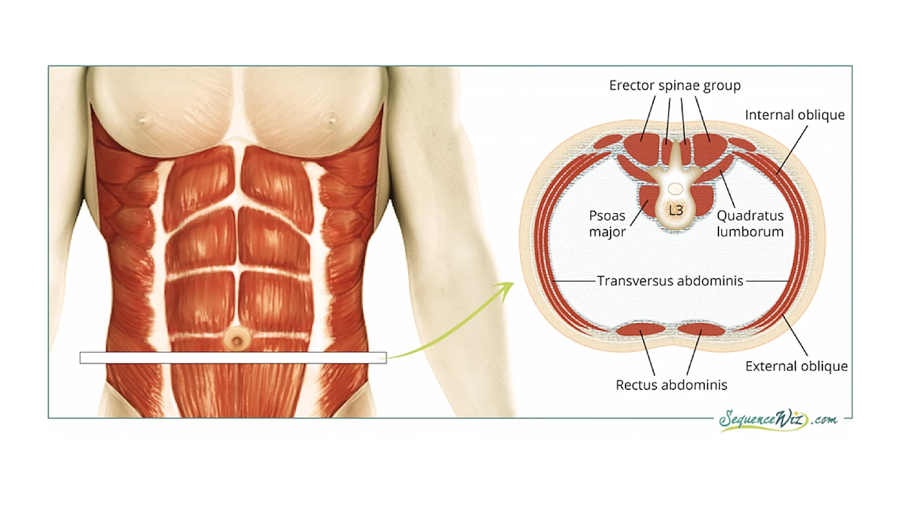

2024 환자 교육자료
1 경추질환
목(경추)의 병인은 단순염좌, 디스크 내장증, 디스크탈출과 방사통, 후관절증, 경수척수증이 있을 수 있습니다.
또한 경추부 구조물의 손상이 뒤통수, 뒷목, 어깻죽지와 승모근, 어깨와 견갑골에 전형적으로 통증을 만듭니다.
논문에 발표된 그림은 아래와 같습니다.


| 디스크 손상으로 인한 연관통 부위 | 후관절로 인한 연관통 부위 |
|---|---|

목 디스크에 나쁜 자세란 척추의 ’후만자세’와 머리가 몸의 중심을 벗어난 자세로서,
고개를 숙인자세, 고개를 앞으로 내민자세, 허리를 굽혀 머리가 앞으로 나간 상태, 한방향으로 목을 돌리고 있는 자세, 높고 딱딱한 배게사용를 오랫동안 하지 않는 것입니다.


목을 앞으로 구부렸을 때 힘을 받으면 수핵이 뒤로 탈출되거나 수핵이 뒤로 밀리면서 섬유륜이 찢어지며 발생합니다. 큰 힘을 갑자기 받아도 발생하지만, 작은 힘을 오랬동안 받아도 발생합니다.

디스크에 나쁜 자세를 피하고 좋은 자세와 운동을 하는 것이 근본적인 치료입니다.
경부 재활 1단계: 척추위생 지키기, 스스로 머리위치 자주 확인하기, 맥켄지 신전운동, 견갑골 후인운동.
척추 위생: 전만자세 유지, 고개내밀지 않기, 숙이지 않기
견갑골 후인운동
경부 재활 2단계: 경부의 굴곡, 신전, 측굴 근육의 등척성운동, 탄력밴드 등척성 운동.
초기에는 절대 하지 마세요


통증이 심할 때 소염진통제를 통해 통증을 조절할 수 있습니다.
소염진통제로 해결되지 않을 경우 스테로이드 주사를 통해 신경 뿌리의 염증을 줄여서 통증을 가라앉힐 수 있습니다.
팔의 힘이 중요한 정도로 떨어지거나, 다리 힘이 약해지거나 대소변 보는데 장애가 발생할 경우 수술을 고려해볼 수 있습니다.
2 요추질환
허리(요추)의 병인은 단순염좌, 디스크 내장증, 디스크탈출과 방사통, 후관절증, 척추관협착증 등이 있을 수 있습니다.
또한 요추부 구조물의 손상이 허리, 골반, 엉치, 엉덩이, 사타구니에 전형적으로 통증을 만듭니다.
논문에 발표된 그림은 아래와 같습니다.

디스크 탈출증으로 인한 방사통은 다리로 뻗쳐나가는 통증을 느낄 수 있습니다.
허리가 굽은 자세와 골반이 뒤로 돌아가는 자세는 수핵을 뒤로 밀어내고, 섬유륜을 위아래로 견인 시켜, 증상을 더욱 악화시킵니다.
바닥에 앉거나, 허리를 숙이는 것은 반드시 피하고 전만 각도를 유지합니다.

허리가 유연해져야 한다는 오해로 하는 굴곡 스트레칭운동, 허리가 약해서 강해져야 한다는 오해로 시행하는 고강도 코어운동이 대표적으로 잘못된 운동입니다.
허리가 앞으로 구부려 졌을 때(후만), 힘을 받으면 수핵이 뒤로 탈출되거나 수핵이 뒤로 밀리면서 섬유륜이 손상됩니다.
때문에 적절한 전만자세를 유지하고, 잘못된 힘을 받지 않도록 척추안정성을 높이면 손상된 섬유륜은 천천히 스스로 회복되고, 통증에서 회복될 수 있습니다.
요추전만, 복부고정
일상생활 중의 통증에서 벗어나는 단계 입니다.
척추를 ’전만자세’로서 항상 유지하는 것을 목표로, 신경쓰지 않아도 전만자세가 유지되도록 습관화 시켜야 합니다. (일반적으로 새로운 습관을 익히는 데 평균 66일이 걸립니다) 정상 전만각도는 30 ~ 80도까지 사람마다 다르므로 자신에게 맞는 의자쿠션과 허리베개의 선택이 필요합니다.
습관화 되면 재발을 방지할 수 있습니다.

요추전만과 복부고정을 습관화한 채 일상생활을 수행하여 허리의 손상을 예방하고 통증에서 벗어나기 위한 주의사항을 말합니다.
의자에 앉을 때, 차에 타고 내릴 때, 물건을 들어올릴 때, 가사일을 할 때 항상 유지합니다.
허리디스크성 통증에서 회복하고, 정상 요추전만, 자세 변경 방법을 익히는 단계 통증 : 5점 이상(총 10 점)
운동 : 척추위생 지키기, 맥켄지 신전운동, 걷기
척추 위생 지키기 : 요추 전만자세를 앉아서, 서서, 자세 변경할 때 항상 유지하는 것
복부 고정하고 걷기 : ‘헛기침’ 할때의 복근의 힘(최대의 10~20%) 정도로 힘을 주고 요추전만자세로 걷기
멕켄지 신전 운동
엎드려서 하는 신전 운동 : 1단계(엎드려 복식호흡) -> 2단계(손 야구배트 모양) -> 3단계(팔꿈치로 지지) -> 4단계 (팔 전체로 지지)
앉아서 하는 신전 운동 : 일하거나 운전할때; 견갑골을 붙이고 흉부를 뒤로 넘기면서 천장 보기
서서 하는 신전 운동 : 걸을 때, 집안일 할 때; 손을 허리춤에 대고 배를 살짝 내밀면서 천장을 보고 상체 뒤로 젖히기

허리디스크가 아물어 들어가는 단계 통증 : 4점 이하(총 10 점)
운동 : 광배근 운동, 엉덩이 운동
광배근 운동 : 앉아서 노젓기; 허리는 움직이지 않도록 의자에 기대어서
엉덩이 운동 : 다리 벌리기; 요추전만 유지하고 의자에 기대어서 다리벌리기 (밴드운동 포함)
통증 없는 범위에서의 평소 즐기던 가벼운 운동 (새로 운동을 배우지 말기)
허리디스크가 거의 아물어 들어가 뻣뻣함을 느끼는 단계 통증 : 일상생활 중에는 거의 없거나, 가끔 유발되는 단계
운동 : 엉덩이 뒤로빼는 스쿼트, 버드독, 플랭크, 맥길의 빅3
엉덩이 뒤로 빼는 스쿼트 : 2~30도만 앉는 스쿼트, 무릎이 발끝을 벗어나지 않도록
버드독 운동 : 네발 자세로 다리 혹은 팔 들었다가 제자리로
플랭크 : 허리가 위로 솟아오르지 않도록
그외 코어근육 운동

통증이 심할 때 소염진통제를 통해 통증을 조절할 수 있습니다.
소염진통제로 해결되지 않을 경우 스테로이드 주사를 통해 신경 뿌리의 염증을 줄여서 통증을 가라앉힐 수 있습니다.

다리의 힘이 중요한 정도로 떨어지거나, 대소변 보는데 장애가 발생할 경우 수술을 고려해볼 수 있습니다.
3 어깨질환
- 어깨관절은 몸의 힘을 팔로, 팔의 힘을 몸으로 전달해줍니다.
- 회전근개 힘줄들은 어깨의 넓은 움직임을 만듦과 동시에 구조적 안정성을 유지해주기 위해 애쓰는 구조물입니다.
- 팔은 어깨관절을 통해 몸통에 붙기 전에 견갑골과 먼저 만나고(견갑상완관절) 견갑골이 흉곽과 만납니다(견봉쇄골관절, 견흉관절).
- 따라서, 유연하고 튼튼한 견갑골을 회복하기 위하여 ’견갑골 안정화 운동’이 회전근개 손상 재활에 참 중요합니다.
회전근개가 어깨안에서 충돌되는 행동을 피해야합니다. 예를 들어, 어깨보다 높게 팔을 들어 물건을 내리는 것, 라켓운동, 야구 등 오버헤드 동작이 있습니다.
다음과 같은 순서로 이루어지며, 물리치료실에서 교육이 진행됩니다.
- 1단계 : 견갑골 유연성 회복하기
목표: 어깨관절 유연성, 견갑골 주변근육 유연성, 체간 자세 회복
운동 : 견갑골 뒷당김 운동, 견갑골 시계 운동, 어깨관절가동범위 운동
개요: 어깨관절과 견갑골 주변근육의 유연성회복과 활성화를 위한 스트레칭 운동 및 어깨 거들(shoulder girdle)을 정상 자세로 회복시키고, 라운드숄더를 교정.
- 2단계 : 유연하고 튼튼한 견갑골 주변근육
목표: 견갑골 주변 근육 강화, 전거근 활성화
운동: 견갑골 딥스, 견갑골 플러스업, 전거근 활성화
개요: 충분히 견갑골의 가동성을 회복했다면, 조심스럽게 견갑골 주변근육의 강화운동을 시행합니다. 견갑골의 기울임을 담당하는 전거근을 인식합니다.
- 3단계 : 회전근개 건강 회복하기
목표: 회전근개 강화 운동 축부하 AROM
운동: Wall roll, wall ball clock, blackburn
개요: 튼튼하고 유연한 견갑골이 지지해주는 것을 바탕으로 갓 회복한 회전근개를 강화하여 손상 위험에서 벗어납니다.


3.0.1 석회쇄척술 (barbotage)
석회쇄철술 후 사진, 시술 사진 추가
4 무릎질환
무릎 통증의 흔한 원인은 생리적과사용으로 인한 스트레스, 퇴행성관절염, 활액막염, 그 외 원인으로 인한 관절염 등이 있을 수 있습니다.
생리적과사용 스트레스
무릎 관절에 힘이 많이 가해져서 뼈에 스트레스가 가해진 상태. 대사 증가와 미세골절이 있어 통증에 민감해진 상태
퇴행성관절염
무릎관절의 연골의 손상, 뼈의 골극 형성, 관절공간의 감소로 특징되는 질환. 오랜시간 동안 반복된 손상이 누적되어 보이는 것
활액막염
무릎관절 내부 구조물의 손상이 유발하는 관절 활액막의 염증 통증에 민감한 조직이라 심한 통증을 만들고, 구조적 손상없이도 주된 통증의 원인이 되기도함. 심한 경우 스테로이드 주사가 치료 효과가 있다.